1848. március/March 15.
A bécsi forradalom hírére Pesten is mozgolódnak a fiatalok. Lefoglalják Landerer nyomdájának egyik gépét és kinyomtatják a Nemzeti dalt és a tizenkét pontot. Nagygyűlést tartanak a Nemzeti Múzeum előtt, majd elfogadtatják a városi tanáccsal a tizenkét pontot, megalakul a Közbátorsági Bizottmány. A tömeg a Helytartótanács elé vonul és követeli Táncsics Mihály szabadon engedését, illetve a Nemzetőrség szervezésének engedélyezését.
The news of the revolution in Vienna inspired the young radicals (the March Youth) at Pest to act as well, they took control of Landerer’s press, and printed Petőfi’s poem, the National Song, and the so-called 12 Points. They held a gathering at the steps of the National Museum and after that they went to the Council of the City of Pest for approval of forming the Committee of Public Security (Közbátorsági Bizottmány). The crowd then went to the Lieutenancy and demanded the freeing of Mihály Táncsics and permission for forming the National Guard.
1848. március/March 17.
V. Ferdinánd király 1848. március 17-én Batthyány Lajost bízta meg az első magyar minisztérium (kormány) megalakításával
King Ferdinand V. commissioned Lajos Batthyány to form the first Hungarian ministry (government).
1848. április/April 11.
V. Ferdinánd elfogadja az új kormány törvényeit. A törvények három lépésre bonthatók: a feudalizmus lebontása, a polgári állam felépítése és az állam egységének megteremtése. Rendezetlen maradt azonban a jobbágyfelszabadítás konkrét kivitelezésének kérdése, illetve az uralkodó, a kormány és a hadsereg viszonya.
Ferdinand V accepted the laws of the newly formed government, these laws can be broken down into three groups: the abolishment of feudalism, the construction of a bourgeois-state, and the forming of a united state. The emancipation of serfs however remained an open question, as well as the relationship of the monarch, the government, and the military forces.
1848. július/July 5.
Az első népképviseleti országgyűlési választásokat, az áprilisban elfogadott V. törvénycikk alapján, június második felében tartották. A hivatalos megnyitóra július 5-én, Pesten került sor.
The first parliamentary elections were held in the second half of June, based on Article V of the law, accepted in April. The official opening took place on July 5 in Pest.
1848. augusztus/August 29. - szeptember/September 11.
Az országgyűlés megbízta Batthyányt és Deák Ferencet, hogy augusztus 29-én a királyhoz járuljanak azzal a kérelemmel, hogy a király állítsa le a készülő horvát támadást. Ezek a törekvések eredménytelennek bizonyultak, hiszen a horvát csapatok szeptember 11-én betörtek Magyarországra. Ekkor Batthyány és kormánya egy része lemondott, de többek közt a nádor felkérésére újra elvállalta régi tisztségét, azonban ezt már nem volt hajlandó elfogadni az uralkodó. Ezután még megpróbált kompromisszumra jutni a királlyal, ez azonban nem sikerült. Végül Batthyány október 2-án lemondott megbízatásáról.
The parliament mandated Batthyány and Deák to approach the king on August 29 with a request to stop the forthcoming Croatian attack. These efforts proved pointless, as Croatian troops invaded Hungary on September 11th. At that time Batthyány and part of his government resigned, but at the request of the palatine, he took his old office, but the king refused to accept this, at that point. He then tried to make a compromise with him, but failed, and in the end, Batthyány resigned on October 2.
1848. szeptember/September 11. - Jellasics támadása / The attack of Jellasics
Joszip Jellasics horvát bán főserege átlépi a Dráva határfolyót. A hadügyek kivételével Batthyány veszi át a minisztériumok vezetését.
The army of Josip Jellasics; ban of Croatia, crossed the river Dráva. With the exception of military affairs, Batthyany took over the leadership of the ministries.
1848. szeptember/September 29. - Pákozdi győzelem / The victory of Pákozd
Pákozdi csata: Az 1848. szeptember 29-én a Velencei-tótól északra, a Pákozd-Sukoró-Pátka háromszögben vívott csatában Móga altábornagy seregei vereséget mértek a Jellasics horvát bán által vezetett seregre.
In the battle fought at the Pákozd-Sukoró-Pátka triangle, north of the Lake Velence on the 29th of September in 1848, the armies of Lieutenant-General János Móga defeated the army led by the Croatian ban, Jellasics.
1848. október/October 6. - Bécsi forradalom / The Revolution of Vienna
Bécsben felkelés tör ki, V.Ferdinánd a morva országi Olmützbe menekül vasúton. A bécsi nép felakasztja Latour hadügyminisztert.
A revolution broke out in Vienna, Ferdinánd V. fled to Olmütz by train accompanied by almost the whole government. The people of Vienna hang Minister Latour.
1848. október/October 30. - Schwechati vereség / The battle of Schwechat
A schwechati csata az 1848–1849 évi szabadságharcban, az 1848 őszén a Dunántúlon folyó hadműveletek utolsó csatája volt. 1848. október 30-án a Bécs melletti Schwechat falu közelében a Móga János vezette magyar sereg vereséget szenvedett a Windisch-Grätz vezette császári haderőtől.
The battle of Schwechat was the last battle of the Transdunabian campaign, around the village of Schwechat, near Vienna the Hungarian army led by János Móga was defeated by the imperial forces led by Windisch-Grätz.
1848. december/December 2. - V.Ferdinánd lemond a trónról / Ferdinand V. abdicated his throne
V.Ferdinánd lemond a trónról és öccse, Ferenc Károly is a trónutódlásról, ezért Ferenc József lép trónra.
Ferdinand V. abdicated from his throne, and his brother also relinquished being the successor of him; Ferenc József rose to power.
1848. december/December 30. - Móri csata / The battle of Mór
Szabadságharc téli hadjáratának egyik ütközete volt melynek során 1848. december 30-án Perczel Mór honvéd tábornok hadteste Mór mellett vereséget szenvedett a Josip Jelačić vezette császári csapatoktól. A vereség a magyar főváros feladásához vezetett és a honvéd haderő – végső összeomlásától eltekintve – legsúlyosabb válságának kezdetét jelentette.
The battle of Mór was one of the battles of the winter campaign in the Freedom Fight of 1848-49 during which on Dec. 30 1848, the troops of General Mór Perczel were defeated by the imperial army led by Josip Jellasics. The defeat led to losing the Hungarian capital and marked the beginning of the worst crisis of the Hungarian Revolutionary Army apart from its final collapse.
1849. február/February 26-27. - Kápolnai csata / The battle of Kápolna
Dembinszky Henrik a Tarnánál nem tudta visszaverni az osztrák támadást. Kápolna a császáriak birtokába került, a vereséget szenvedett magyar hadsereg a Tisza bal partjára vonult vissza. Ferenc József a győzelem hírére kiadta az olmützi alkotmányt.
Henryk Dembiński was unable to repel the Austrian attack at the Tarna. Kápolna was taken over by the imperial forces, and the defeated Hungarian army retreated to the left bank of the Tisza. Ferenc József published the so-called Olmütz constitution.
Tavaszi Hadjárat / The Spring Campaign (1849. március/March 4. - 1849. május/May 21.)
| 1849. március/March 4. - Olmützi alkotmány / March Constitution (Austria) V. Ferdinánd király lemondott Ferenc József javára King Ferdinand V resigned in favour of Francis Joseph. |
1849. április/April 02. - Hatvani csata / The Battle of Hatvan Magyar csapatok morális sikert érnek el. Hungarian troops were achieving successes. |
| 1849. április/April 04. - Tápióbicskei csata / The Battle of Tápióbicske A Klapka György, és Damjanich János által vezetett seregek összetalálkoztak Jellasics seregével Tápióbicskén és harcba kezdtek, ami magyar győzelmet hozott, de leleplezte a haditervet, hogy bekerítik Windisch-Grätz csapatait. General György Klapka is severely defeated. The joined units of György Klapka and János Damjanich caught up with the retreating troops of Jellasics at Tápióbicske, where a battle developed, which brought Hungarian victory, but the plan of encircling Windisch-Grätz was revealed in the process. |
1849. április/April 06. - Isaszegi csata / The Battle of Isaszeg Isaszeg térségében nagy összecsapások, melyekben Damjanich, Klapka és Aulich hadtestei vettek részt és a magyarok itt is győzelmet arattak. Major fights were fought in the area of Isaszeg, in which the troops of Damjanich, Klapka and Aulich took part, and ended in Hungarian victory.v |
| 1849. április/April 14. - Függetlenségi nyilatkozat / Declaration of Independence A Habsburg-ház trónfosztása, a magyar uralkodók többé nem kerülhettek ki a Habsburg dinasztiából. The dethronement of the House of Habsburgs, Hungarian monarchs could no longer be from the House of Habsburgs. |
1849. május/May 21. - Buda felszabadítása / Siege of Buda Buda felszabadítása és a délvidéki sikerek nyomán az ország területe érdemben felszabadult. Following the liberation of Buda and the successes in the south, most of the country was liberated. |
| 1849. Július 28. - Nemzetiségi határozat / The Decree of Nationalities A nemzetiségek egyenjogúságát kívánta szabályozni. It was supposed to regulate the equality of nationalities. |
1849. Július 31. - Segesvári csata / The Battle of Segesvár Az erdélyi haderő lassú felmorzsolódása, Petőfi halála. The slow disintegration of the Transylvanian army, the death of Sándor Petőfi. |
| 1849. Augusztus 09. - Temesvári csata / The Battle of Temesvár A honvédség súlyos vereséget szenved. The Hungarian Revolutionary Army is severely defeated. |
1849. Augusztus 13. - Világosi fegyverletétel / Surrender at Világos Görgei lerakja a fegyvert, az értelmetlen véráldozatot elkerülve. Görgei laid down his weapons before the Russian troops (but not the Austrian), to avoid the pointless massacre. |
| 1849. Október 06. - Aradi vértanúk kivégzése / The Execution of the Martyrs of Arad 13 főtisztet kivégeznek a megtorlás része ként. Thirteen generals were executed as part of the retaliation. |
| Pilvax kávéház | Történet: Innen indult a forradalom 1848. március 15-én reggel. A márciusi ifjak itt fogalmazták meg a 12 pontot, és Petőfi Sándor itt szavalta el először a Nemzeti dalt It is the place where the revolutionaries of march 15. gathered for the first time and had compiled the 12 points. Furthermore Petőfi Sándor recited the “Nemzeti dal” here first. |
|
| 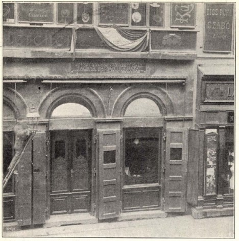 | 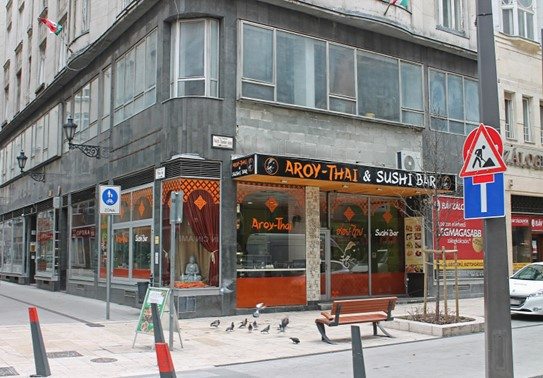 | 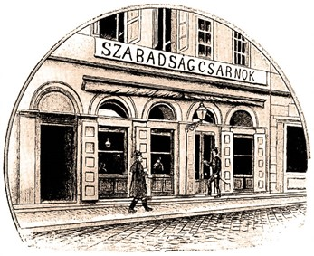 |
| Egyetemek/1 | A Királyi Magyar Tudományegyetem Orvostudományi Karának öt tanszéke és kórháza. The five dipartments and hospitals of the University of Hungary |
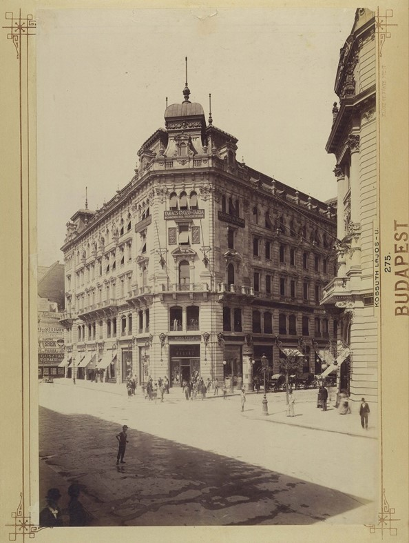 |
| 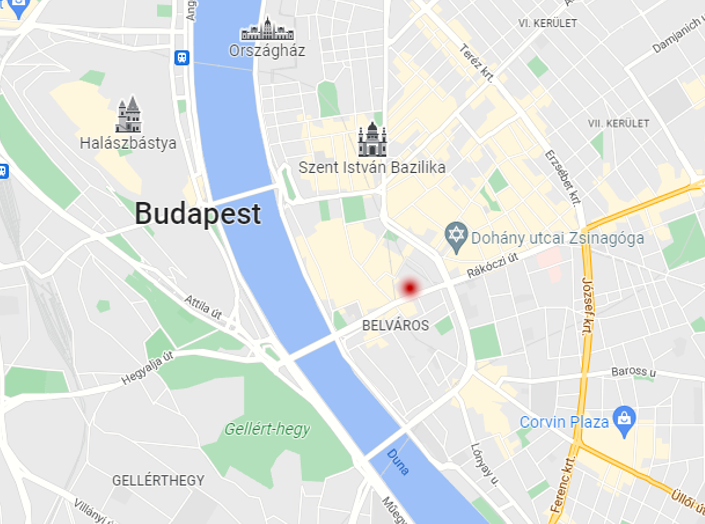 | ||
| Egyetemek/2 | A bölcsész- és mérnöki kar, valamint a jogi egyetem 1848-ban a mai Egyetem téren álló egykori pálos kolostor épületében működött At the time the humanities faculty, the technical faculty and faculty of law were located in the building that was standing on today's Egyetem square. |
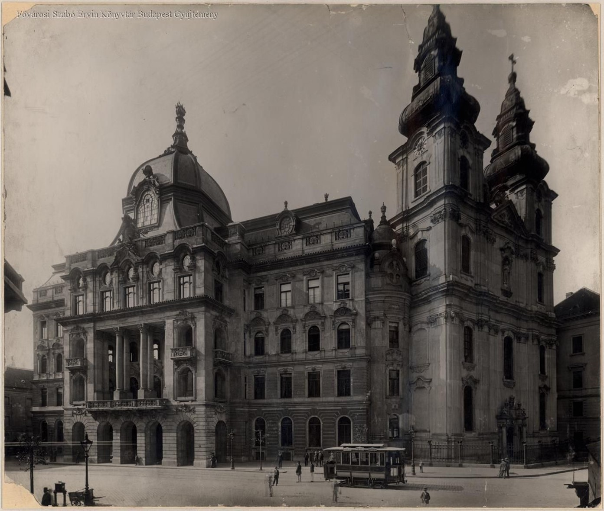 |
| 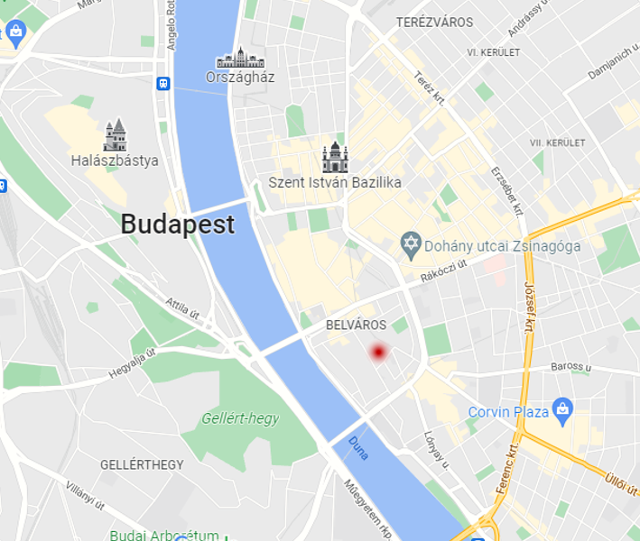 | ||
| Landerer és Heckenas nyomdája | A tömeg 10 óra körül ért a nyomdához és lefoglalta az egyik nyomdagépet hiszen csak így tudták kinyomtatni a szórólapokat a cenzúra miatt. ITT születtek Meg a 12 pont és a Nemzeti dal elsö példányai. The crowd that had gathered until than, reached the press office at about ten o’clock and confiscated one of the machines in the nem of the Hungarian government. This was necessary due to the strict censorship Austria. The first copies of the Nemzeti dash and the 12 pints were established here. |
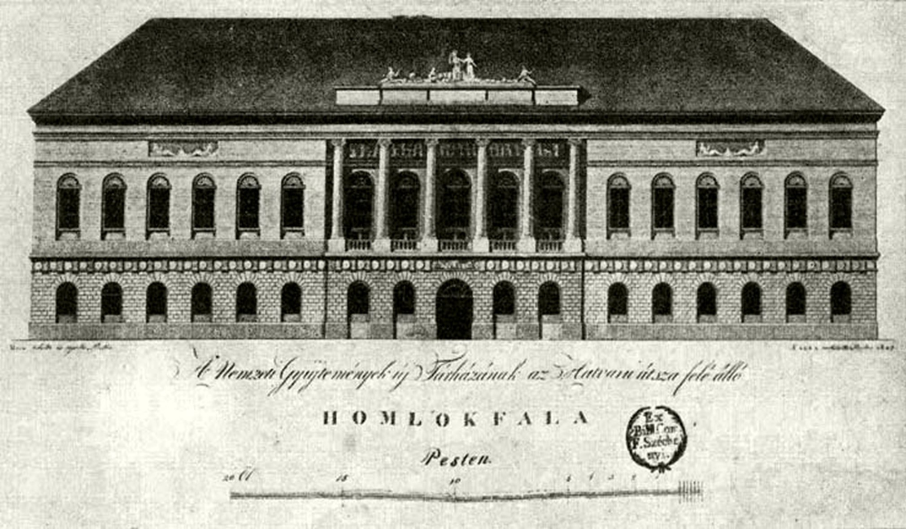 |
| 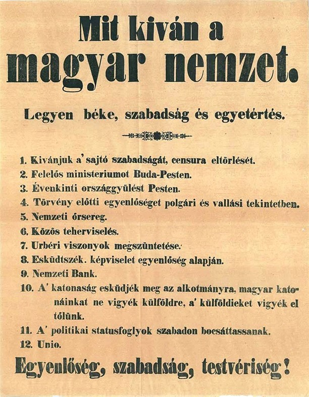 | 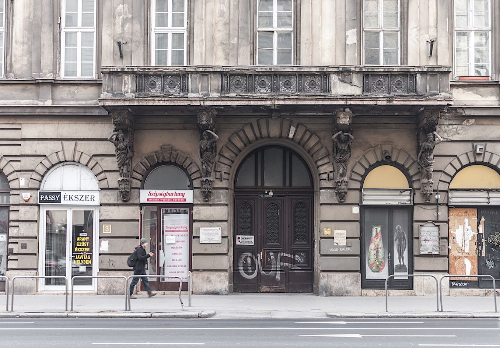 | 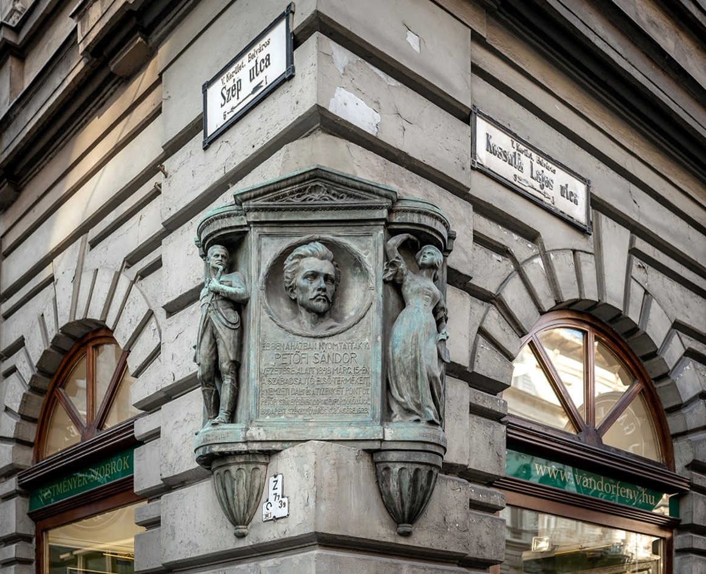 |
| Nemzeti Múzeum | A forradalmi tömeg délután 3 órakor a Nemzeti Múzeum előtti térre vonult és népgyűlést tartottak.Bár jól hangzik, és sokat ismételgetve a köztudatban is megragad, ennek ellenére akkor és ott nem szavalta el a Nemzeti dalt – megtette ezt aznap előtte egy párszor máshol –, de Vasvári Pállal és Irinyi Józseffel lelkesítő beszédet intézett a néphez. The revolutionary crowd reached the National Museum at about three o’clock in front of which a people’s assembly was held. To our best knowledge Petőfi Sándor recited his poet again sue as at many other places that day. Furthermore he gave a speech to the public alongside Vasvári Pál and Irinyi József. |
|
| 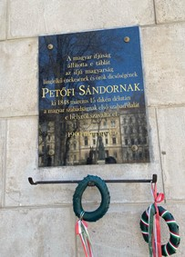 | 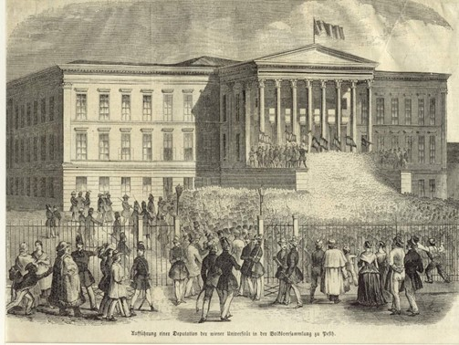 | 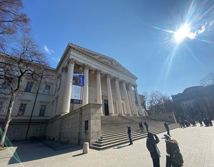 |
| Városháza | A tömeg a Városháza elé vonult. Követeik átadták a 12 pontot a tanácsnokoknak, akiket Rottenbiller Lipót alpolgármester győzött meg azok elfogadásáról The crowd went to the City Hall, where their representatives handed over the Twelve points to the members of the council. The vice mayor, Leopold Rottenbiller convinced the councillors to approve of those points. |
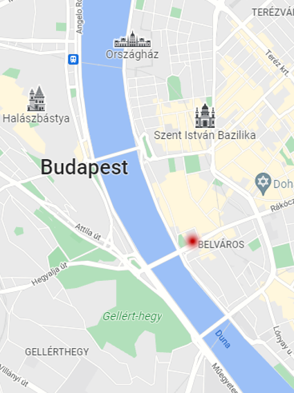 |
| 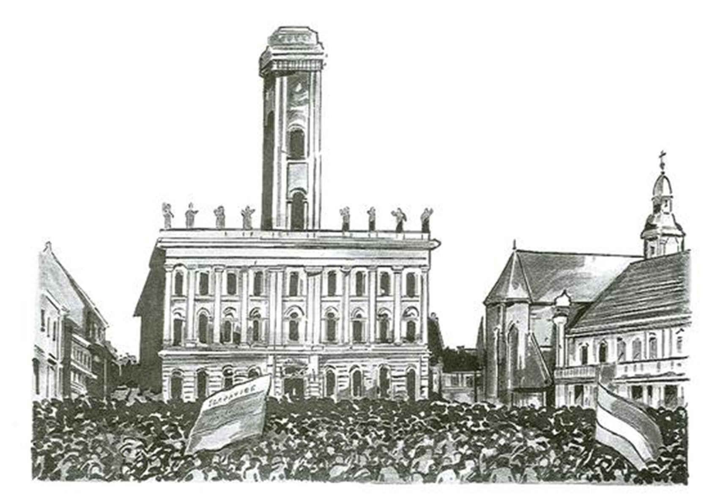 | ||
| Fahíd | Majd a tömeg a városházától Budára indult. A pesti Redoute-nál kialakított hajóhídon keltek át. Then the crowd left the City Hall to go to Buda. To cross the Danube they went across a boat-bridge, which was located near to the Redoute. |
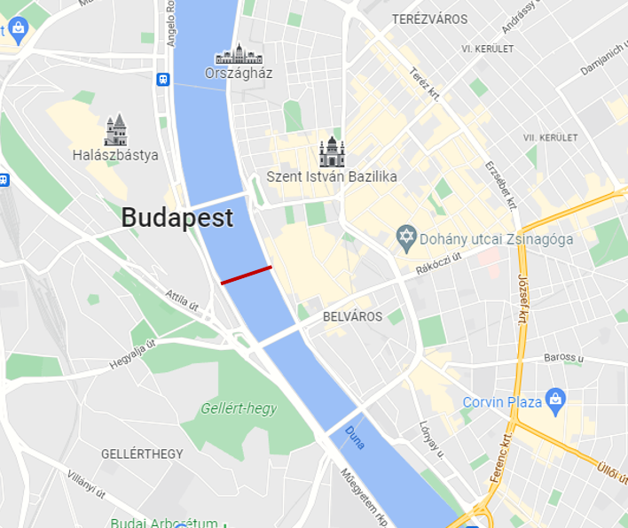 |
| 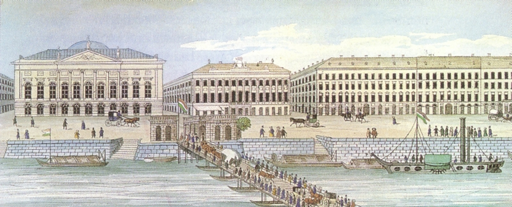 | ||
| Helytartótanács | A Helytartótanács elfogadta a tömeg követeléseit, így a cenzúra eltörlését, a sajtóbíróságok nép közüli választását és az akkor még Mihajlo Stancsics nevű rab kiszabadítását. The Lieutenancy Council accepted what the crowd demanded. Therefore the abolition of censorship, freedom of the press and Mihajlo Stancsics were all acknowledged. |
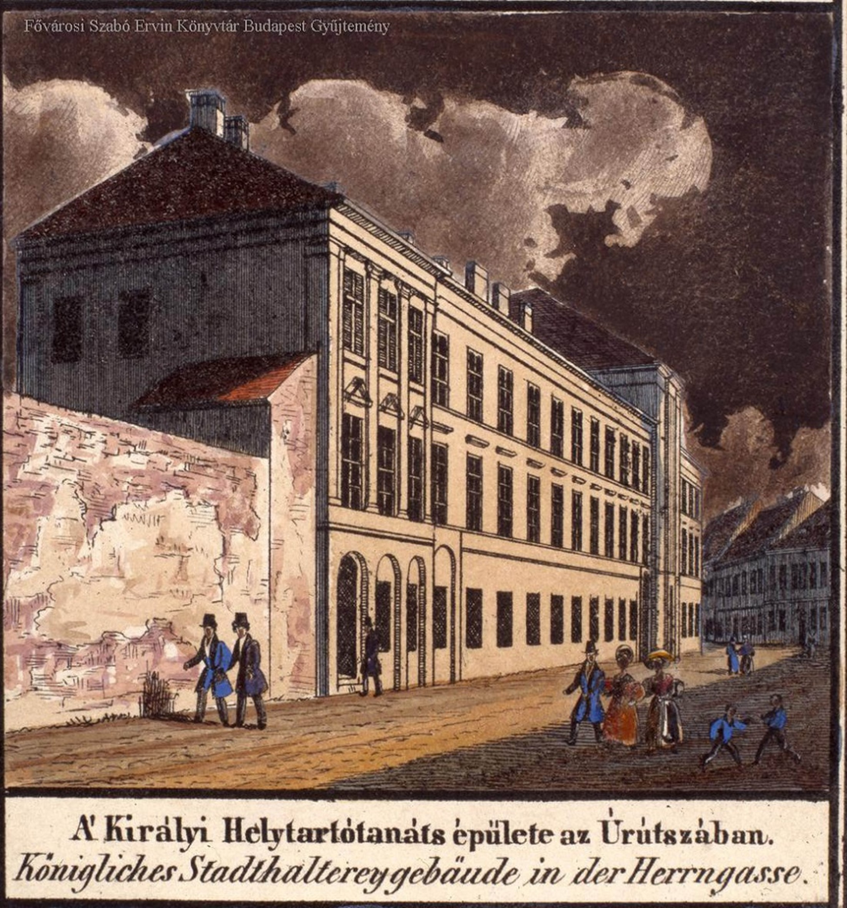 |
| 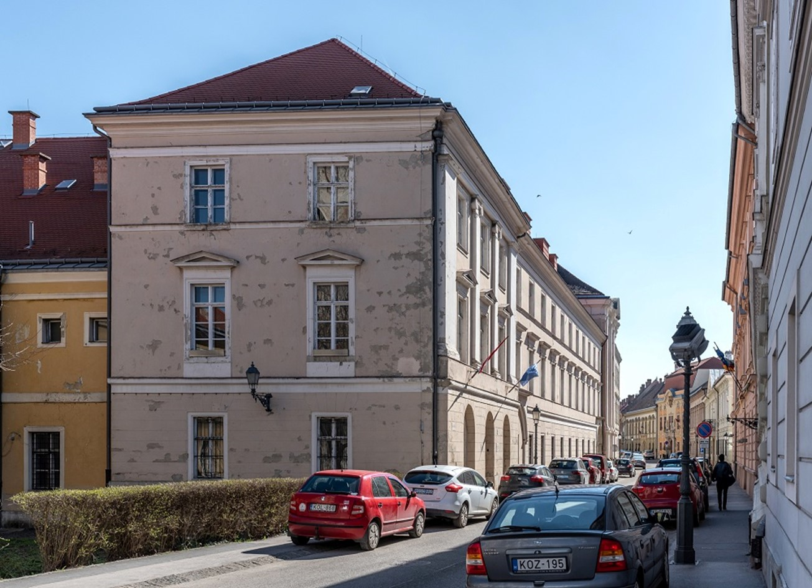 | ||
| Táncsics kiszabadítása | Táncsics Mihály író a közeli József kaszárnyában sajtóvétség miatt raboskodott, ugyanis 1846 után röplapokban követelte a jobbágyság felszabadítását. A tömeg átvonult a később a rabról elnevezett Táncsics Mihály utca 9. szám alatti épülethez. A writer called Táncsics Mihály was held captive nearby for libel. He was demanding the liberation of serfs in leaflets. |
|
| 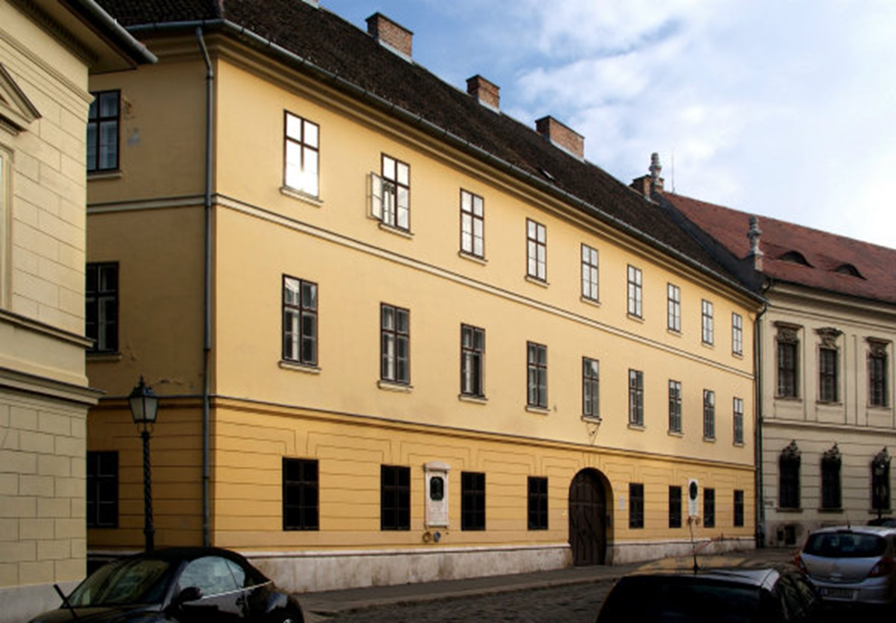 | 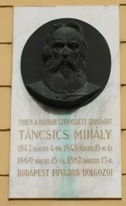 | |
| Nemzeti Színház | A március 15-i események záró helyszíne a Nemzeti Színház volt. Eredetileg a Két anya egy gyermeke című színmű volt műsorra tűzve, de az igazgatóság és Bajza József aligazgató az aznapi események láttán úgy döntött, Katona József Bánk bánját fogják előadni. A Bánk bánt nem folytatták a forradalmi tömeg miatt, helyette a nép kívánságára elszavalták a Nemzeti dalt, elénekelték a Szózatot, a Himnuszt, a Rákóczi-indulót és a Hunyadi László opera jelesebb áriáit. The final place of the revolution was the National Theatre where the directors of the theatre decided to perform the Bánk Bán after seeing the events of the day. After a short period of the performance due to the public’s request different poems are recited such as: the Himnusz, the Nemzeti dal, the Szózat, the Rákóczi-induló and the main arias of the Hunyadi László opera. |
|
| 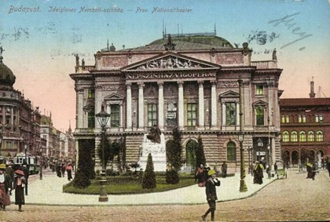 | 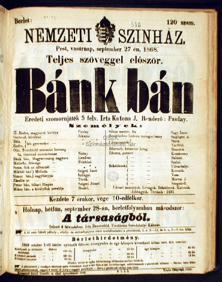 | |
| 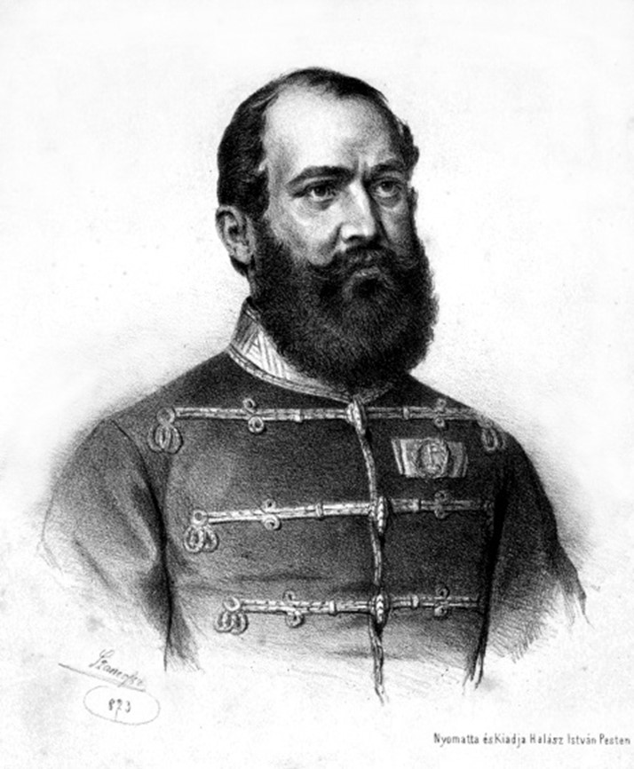 | Damjanich János: (1804-1849) |
| Szerb származású, honvéd vezérőrnagy, akiből szabadságharc egyik legkiemelkedőbb tábornoka lett. A 13 Aradi vértanú egyike. Olykor reménytelen helyzetből is tudott fordítani a csata állásán. A csatamezőn sosem vesztett, minden ütközetét megnyerte. Eredményeit csupán betegeskedései árnyékolhatják be. Ezen alkalmakor szakértelme igencsak hiányzott a tiszti kar soraiból. 1849 október 6-án, utolsó előttiként kötél általi halálra ítélték és az aradi várban kivégezték. Utolsó szavai: „Azt gondoltam én leszek az utolsó, mert a csatában mindig az első voltam. Szegény Emíliám! Éljen a haza!” Military officer of Serb origin who became one the greatest generals of the 1848/49 revolution. He is one of the martyrs of Arad. He could turn around the outcome of the battle even in hopeless situations. He has never lost a single battle. The only thing that could overshadow his achievements is that he got sick from time to time. On these occasions his expertise was definitely missing from the rest of the soldiers. On the 6th October 1849 as the second to last one, he was sentenced to death by hanging and was executed at the castle of Arad. His last words: “I thought I would be the last one since I was always first in battle. My poor Emilia! Long live my country!” |
| 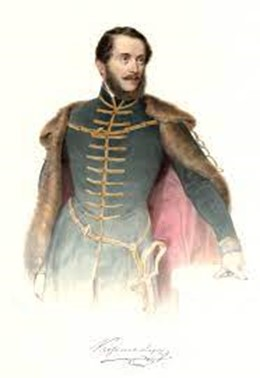 | Kossuth Lajos: (1802-1894) |
| A reformokat támogató liberális nemesség egyik vezéralakja. Magyarország második kormányzója. Érdemei közé tartozik a közvélemény és a modern média megteremtésében vállat szerepe. A pesti hírlap szerkesztője és a Batthyány-kormány pénzügy minisztere is volt. Az előbbiállását udvari támogatásra egy nyomdatulajdonostól Landerertől kapta, amit csak akkor hagyott abba amikor bécsi nyomásra mégsem kapta meg a megbeszélt béremelést. Nevéhez fűződik az első önálló magyar pénz, a Kossuth-bankó. Ezenkívül szónoklatairól az Országos Honvédelmi bizottmány megalapításáról és toborzó körútjáról ismert. Legnagyobb politikai vitáit Széchényivel folytatta, akiről ezt mondta: „Ujjait a kornak ütőerére tevé, és megértette annak lüktetéseit, és ezért, egyenesen ezért tartom én őt a legnagyobb magyarnak. One of the leading figures of the liberal nobility who supported the idea of reforms. he was the second Governor of Hungary. He played an important role in creating public opinion as well as modern press in Hungary. He was the editor of Pesti Hírlap as well as the minister of finance for the Batthyány-government. The former job was offered to him by Landerer a printing house owner, who was actually working undercover for the Vienna police. He quit only after he had not received the raise they agreed on, due to pressure from Vienna. He introduced new bank notes which were later referred to as “Kossuth Notes”. Apart from that he is known for his speeches, founding the idea of the National Defence Committee and his recruitment tour. He’s had his biggest political debates with István Széchényi, about who he’s said the following: he put his fingers on the artery of the time and he understood its pulse, that is why, exactly why I see him as the greatest Hungarian.” |
| 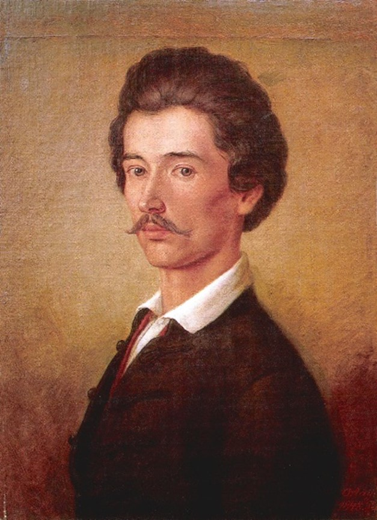 | Petőfi Sándor: (1823-1849) |
| Magyar költő, forradalmár magyar irodalom egyik legismertebb alakja. A márciusi ifjak egyike és a március 15-én történt események egyik kulcsfigurája. A szabadságharc során Bem József (Bem apó) seregében szolgált és a Segesvári csatában tűnt el mindössze 26 évesen. Halálának körülményei máig sok találgatás és teória alapját adják. Hungarian poet, revolutionist, one of the most well-known figures of Hungarian literature. He was one of the Youth of March and played a key role of the events of march 15th in 1848. During the revolution he’s served in the army of József Bem and went missing in the battle of Segesvár at the age of 26. The details of his death are the basis of many theories and speculations even to this day. |
| 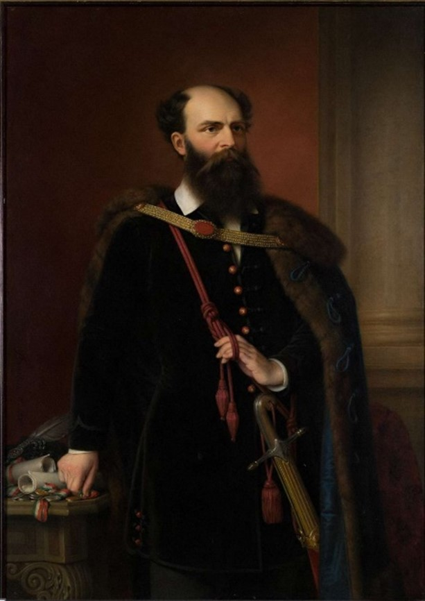 | Batthyány Lajos: (1807-1849) |
| Az első felelős magyar kormány miniszter elnöke. A grófi családba született politikus javaslatára kezdték rögzíteni a felsőház eseményeit. Széchényi Istvánhoz hasonlóan szerepe volt a lóversenyek meghonosításában is. teljesítményét mutatja, hogy az 1848-ben hatalomra került kormányok közül a Batthyány-kormány maradt a legtovább hatalmon. Ő szervezte meg a nemzetőrséget és az önálló magyar honvédséget is. 1849. október 6-án őt is halálra ítélték. Az eredetileg akasztásos ítéletet a nyakán ejtett sebek miatt változtatták meg. Amikor a veszelytőhelyre ért, megkönnyebbülten látta, hogy nincs akasztó fa. Az egyikor magyar miniszer elnöki a kivégző osztag előtt féltérdre ereszkedett. „Éljen a haza! Rajta, vadászok” – kiáltotta. The prime minister of the first responsible government in Hungary. The politician was born an aristocrat (held the title of count) and was the one to suggest to note down what happens in the upper house. Much like István Széchényi he played a big part in establishing horse races in Hungary. His efficiency is supported by the fact that the Batthyány-government has spent the longest time in office out of all the governments that got to power in 1848. He founded the national guards and the independent Hungarian honvéd army. On the 6th of October 1849 he was sentenced to death as well. The original sentence was death by hanging but was changed due to injuries on his neck. When he got to his execution, he was relieved to see that there were no gallows. The former prime mister knelt in front of the firing squad and shouted: “Long live my country! Come on, huntsmen!” |
| 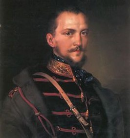 | Görgey Artúr: (1818-1916) |
| Honvédtábornok, hadügyminiszer a forradalom során többször is a honvédsereg fővezére. 1849-ben augusztus 11-13 között tejhatalmat kapott, ami a világosi fegyverletétellel zárult. Civil szakmáját tekintve vegyész 1848 előtt ezen a területen is jeleskedett. Május 26-án Pestre hívta a kormány honvédség szervezéséről szóló szózata és felhívása. Görgeynek, mint volt katonatisztnek be kellett állnia az új hadseregbe. Részt vett több hadjáratban (Őszi-Téli-Tavaszi-és Nyári hadjáratok) valamint a Kápolnai csatában is. A világosi fegyverletétel után Ausztria száműzetésre ítélték. Magáról így vélekedett a legendás magyar írónak Mikszáth Kálmánnak: „Nem volt énbennem semmi katonai zseni. Az csak mese, magyar legenda, mint annyi más. Rendet tartottam a katonáim között, ez az egész, és a fickók derekasan viselték magukat néhányszor. A többi lárifári.” Military officer, minister of war, during the 1848-49 revolution he was the commander in chief of the Hungarian forces on multiple occasions. In 1849 he was given omnipotence (August 11-13) which ended in surrendering at Világos. By civilian profession he was a chemist and has had my achievements in the field prior to 1848. On March 26th he came to Pest due to the call of the government. As a former soldier Görgei had to enlist in the new army. He has taken part in multiple campaigns ( Winter, Summer, Spring and Autumn campaigns) as well as the battle of Kápolna. After his surrender at Világos he was sentenced to exile in Austria. When asked about himself he said this to the legendary Hungarian writer Kálmán Mikszáth: “I didn't have any military genius in me. That is nothing else than a fairy tale, a Hungarian legend, like so many other things. I just kept order among my soldiers, that's all, and the fellows on some occasions behaved bravely. Everything else is fiddlesticks.” |
| 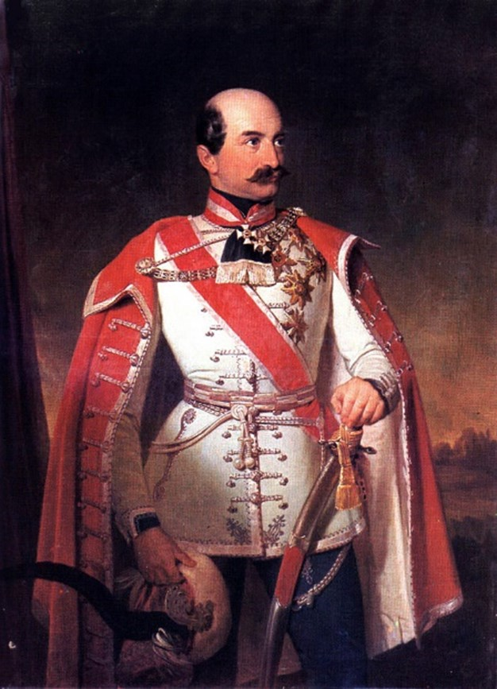 | Josip Jelačić: |
| Horvát bán, 1848 szeptember Bécs támogatásával Magyarország ellen támadt, ezzel kitört a szabadságharc. Szeptember 29-én a pákozdi csatában legyőzte a magyar sereg, mert Bécs nem tudta támogatni őt a bécsi forradalom miatt. Croatian ban, in September of 1848 with the help of Vienna he attacked Hungary which started the war of independence. On 29th of September in the battle of Pákozd he defeated the Hungarian army but because of the revolution in Vienna he couldn’t get any support. |
| 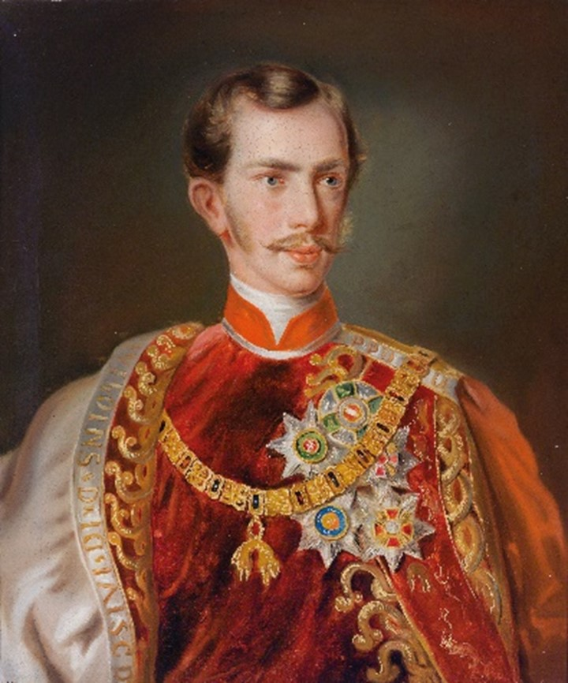 | Ferenc József: |
| 1848 decemberében lett az új császár. Mikor a magyarok visszafoglalták Budát katonai segítséget kért I. Miklós orosz cártól. Ő végeztette ki az aradi vértanúkat. Ő verte le a forradalmat. Szabadkezet adott Haynaunak a megtorlásra. He became emperor in December of 1848. When the Hungarians reclaimed Buda he asked for military aid from Nicholas I of Russia. He was the one who had the 13 Martyrs of Arad executed. He defeated the revolution. He let Haynau retaliate. |
| 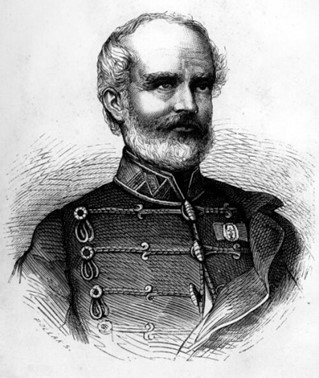 | Bem József: |
| Lengyel származású, a szabadságharc egyik híres tábornoka. Erdélyi hadsereg parancsnoka. Erdélyi sikerei után 1849 júliusában a segesvári csatában vereséget szenvedett, az erdélyi főerők a temesvári csatát is elvesztették az oroszok ellen. Törökországba menekült, kiadatás ellen felvette az iszlám vallást. Józef Bem of Polish origin, he was one of the famous generals of the war of independence. He was the general of the Transylvanian army. After his success in Transylvania in July of 1849 he was defeated in the battle of Segesvár, the main forces of Transylvania also lost the battle of Temesvár against the Russians. He fled to Turkey and took up the religion of islam so as to not be extradited. |
| 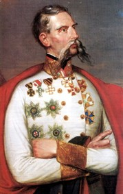 | Julius Jacob von Haynau: |
| Osztrák császári-királyi táborszernagy. Aradi vértanúk kivégzéséért felelős, állítólag kacagott végig, ezért beceneve a “bresciai hiéna” lett. Leverte a forradalmat, kegyetlensége miatt Európa-szerte közutálatnak örvendett, ezért a császár visszahívta. Austrian imperial-royal camp admiral. He executed the 13 Martyrs of Arad and apparently laughed during it which is why he got the nickname “Brescia Hyena”. He defeated the revolution and because of his cruelty he enjoyed public hatred across Europe so the emperor called him back. |
| 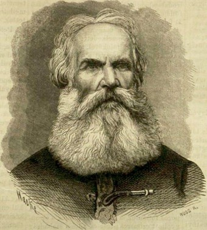 | Táncsics Mihály: |
| Magyar író, az első szocialista politikusok egyike. 1847-ben sajtóvétség miatt bebörtönözték. 1848. március 15-én szabadította ki a pesti nép. A börtönből kiszabadulva olyan kocsiba ültették, amit lovak helyett hívei húztak. Hungarian writer, one of the first socialist politicians. He was put into prison in 1847 because of press offense. On the 15th of March 1848 he was freed by the people of Pest. After leaving prison he was put in a carriage that was pulled by his followers instead of horses. |
Köszönettel fogadom Győr vármegye követének inditványát. Ámbár meg lévén győződve, hogy a fenforgó rendkívüli körülmények speciális tárgyakon felül emelkedni parancsolnak, inditványát csupán alkalmul kivánom használni, hogy a T[ekintetes] RR-ket felkérjem, miszerint a perczek roppant felelősségének érzetében az országgyűlés politicáját azon magasságra méltóztassanak felemelni, mellyet az idő elénkbe szab.
E szempontból indulva a bécsi bank viszonyainak részletes taglalatába ez uttal nem bocsátkozom. Nem fejtegetem azon tévesztett politicát, miszerint ezen banknak ujnemü papiros pénz kibocsátására intézett institutiója roppant financiális áldozatokkal vásárolván azt meg, mit a kormány ezen áldozatok nélkül biztosabb sikerrel eszközölhetett volna, már eredetében annak magvát viselé, hogy a birodalmi közállomány nem csak adósságaiból kibonyolódni nem fog – mit különben 1817–1825-ig eszközölni igen könnyü volt volna, sőt ujabb meg ujabb adósságokba fog süllyedni.* Azon viszonyok taglalatába sem akarok bocsátkozni, mellyek a forgásban lévő kamatlan bankjegyek s a birodalom kamatos kölcsönei közt annál fogva fenforognak, mivel ez utóbbiak kötelezvényei nagy részben az elsőbbek fedezését képezik, azoknak tehát árcsökkenése az elsőbbek hypotecáját is csökkenti[…]
Szegednek népe, nemzetem büszkesége, szegény elárult hazám oszlopa! mélyen megilletődve hajlok meg előtted.
Mikor Szegedhez közeledtem, sajnálni kezdém, hogy mellemből kifogyott a hang; de midőn Szeged népét látom, ugy látom, hogy nincs mit sajnálnom, mert itt többre nincs szükség, mint hogy a lelkesedés előtt mélyen meghajoljak.
Midőn én, mint az ország teljhatalmu biztosa, s a honvédelmi bizottmány egyik tagja, népfelkelést intézendő, utániban más helyekre bementem, azért mentem be, hogy lelkesedést ébresszek; de Szegedre azért jöttem, hogy itt a lelkesedést szemléljem.
És én mondhatom, örömmel szemlélem Szeged népében a lelkesedést; mert veszedelem fenyegeti szegény elárult hazánkat, oly veszedelem, melyhez hasonlót évkönyveink nem mutatnak, s melynek láttára némely kicsinyhitüek a fővárosban azt mondák, hogy a magyar nemzet napjai megszámitvák. De én azt mondám: ez nem igaz.
Alkudozásba akartak ereszkedni Jellasichcsal, ama gaz árulóval, kit az ármány pokoli czéljainak kivitelére, arra, hogy csak nemrég visszanyert szabadságunkat s függetlenségünket kezeinkből ujra kicsikarja s a népet ujra a szolgaság jármába hajtsa, eszközül szemelt ki. De én azt mondám, hogy mielőtt a nemzet annyi erővel s küzdelemmel kivivott szabadságából csak egy hajszálnyit is lealkudnék, elmegyek és megtekintem a népet.
És most, miután Szeged népét látom, látom szemeiben a lelkesedés szikráit, nem késem megirni a fővárosba, hogy Szeged népe az árulóval való minden alkudozás ellen ünnepélyesen tiltakozik. Megirhatom-e ezt? (A nép: Meg!)
Igenis, megirom, hogy miután Szegedet s népének ezreit a haza szerelmétől lelkesülve láttam, kőszirtté szilárdult keblemben a hit, hogy e haza, lépjen bár a pokollal szövetségre ellene az ármány, mentve lesz.
Krisztus mennyei országát megalapítandó a földön, egynek választottai közől azt mondá: e kőszálra épitem én egyházamat; és én hasonlóan mondom, hogy Szegedre s ennek lelkes népére épitem nemzetem szabadságát, és a pokol kapui erőt nem vesznek azon.
Oly hatalmasnak hiszem én a népet, hogy ha felkel és összetart, a ropogva összerogyó ég boltozatait is képes fentartani erős karjaival.
Hazámfiai! Mondhatatlanul fontos az óra, melyben hozzátok szólok; talán éppen ebben az órában ütköznek vitéz seregeink az áruló csordával. Ki tudja, mit hoz ránk ez óra? győzelmet-e vagy veszteséget? – De győzzünk bár, vagy veszítsünk, én Szeged népére minden esetre számolok.* A népre minden esetben szükségünk lesz: ha győzünk, hogy a győzelem gyümölcseit learassa; ha vesztünk, hogy a veszteséget győzelemmé változtassa.
Tehát e fontos órában, e mondhatatlanul fontos pillanatban kérdem: találkozik-e egy fia a hazának, találkozik-e egy polgára a városnak, ki hazája szabadságáért vérét, életét feláldozni kész nem volna? (A nép egyhangulag: Nem!)
Én esküszöm a mindenható Istenre, ki védi az igazságot és a hitszegő árulót megbünteti, esküszöm, hogy hazánk szabadságából egy hajszálnyit utolsó csepp véremig elraboltatni nem engedek; esküszöm, hogy hazánkat védeni fogom, mig karomat felemelhetem. A magyarok Istene ugy segéljen és áldjon meg engemet!
(A nép e szavakat lefedett fővel s fölemelt kezekkel lelkesülve mondotta el a szónok után.)
Hajdan, midőn a hazát veszély fenyegette, hős apáink véres kardot hordoztak körül az országban, s ennek láttára,mint sasok repültek harcmezőre a vitéz magyarok. Én, látván a haza jelen veszedelmét, zászlót ragadtam kezembe, megesküdve, hogy addig nem nyugszom, szegény fejemet nyugalomra nem hajtom, mig az elárult haza fiait szabadságának megmentésére annak árulói ellen zászlóm alá nem gyüjtöm. De most, miután Szeged népének lelkesedését látom, bízvást összehajtom e zászlót, e zászló nem enyém többé, én Szeged zászlója alá állok. És én bizom a magyarok istenében, bizom Szeged népének lelkesedésében, hogy kevés idő múlva mentve lesz a hon; ha pedig a hadi szerencse kevésbbé mosolyogna fegyverünkre, ha netalán a végrehajtó hatalom az ármány által a fővárosból kiszorittatnék, azon esetre Szegedet oly pontnak tekintem, melyről a haza szabadságát, a nemzet függetlenségét megmenteni erősen hiszem.
Szegediek! Testvériség köt össze bennünket. Nincs nemes és nemtelen többé; egy hazának fiai, polgárai, testvérek vagyunk mindnyájan. Tehát testvérileg összetartva ragadjunk fegyvert az árulók ellen, legyünk készen hazánk oltalmára.
Testvérek! Ha ugy jöttem volna e városba, mint valamely rendkivüli örömnek, boldogságnak hirnöke, igényelhettem volna talán tőletek koszorukat, de miután a végre siettem körötökbe, hogy benneteket fegyverre, a haza megmentésére hivjalak fel, azon virágkoszorukat, melyeket lelkes hölgyeitek utamban elhintettek, nem tekinthetem máskép, mint előjeléül azon győzelemnek, melyet a haza ellenségein nemsokára kivivandunk.
Egész életem küzdés és szenvedés vala: de e pillanatban jutalmazva érzem magamat – ám pihenni nem fogok, árva fejemet nyugalomra nem hajtom, mig el nem mondhatom az irás ama szavait: Most bocsásd el, uram, szolgádat, mert láták szemeim hazám szadbaságát, boldogságát megmentve.
Keblem tele érzéssel, még sok mondani valóm volna hozzátok; de az érzés elfojtja ajkamon a szót. Különben egy pár napig körötökben szándékozván maradni; még lesz alkalmam hozzátok bővebben szólani. De most nézzétek – soha nem sírtam – és könnyezek.
Kossuth Hirlapja, 1848 okt. 15. Közlöny 1848 okt. 18. sz
Lelkemben fel vagyok indulva azon gondolattól, […] hogy negyven-ötvenezer […] ember bejő az országba, s úgyszólván kardvágás nélkül foglalja el a hazát. Én nem érzek magamban annyi erőt, hogy ezt tűrjem; egy félóra múlva […] megyek a vasúton, s megkezdem Ceglédnél felhívni a népet, hogy tömegestől fegyverbe szálljon, s így megyek tovább faluról falura, és vagy nem látnak önök többé, vagy látnak, mint utócsapatát oly seregnek, mely maga is képes lesz semmivé tenni oly gyalázatos rablócsordát.
Görgey Tábornok úrnak! El akarja Ön Győrt hagyni? Ütközet nélkül? […] Istenért! Nyitva hagyja a Bécs–Győr–Pesti utat, hogy fütyörészve sétálhasson rajta az ellenség Pestre […], s még csak azt sem mondja egy szóval is, hogy mit akar hát tenni? Hogy tudjuk így magunkat tartani? […] Hiszen így a főváros fel lesz adva!
II. 12. §. A császár mint ausztriai császár megkoronáztatik. […]
II. 14. §. A császár szent, sérthetetlen és nem felelős.
II. 15. §. A császár gyakorolja a főparancsnokságot az összes fegyveres erő fölött vagy személyesen, vagy hadvezérei által.
II. 16. §. A császár határoz béke és had fölött. […].
II. 19. §. A császár nevezi ki és bocsátja el a minisztereket. Ő tölti be a hivatalokat a statusszolgálat minden ágaiban, ő osztja a nemességet, rendjeleket és kitüntetéseket. […].
VII. 37. §. A törvényhozó hatalom a birodalmi ügyekre nézve a császár által a birodalmi ország-gyűléssel együtt […] gyakoroltatik.
VIII. 38. §. A közönséges birodalmi gyűlés két házból álland, úgymint felső- és alsóházból, s a császár által évenkint tavasszal hivatik egybe.
VIII. 39. §. A birodalmi gyűlés Bécsben gyűl össze, de a császár által más helyre is hivathatik. […].X. 84. § A végrehajtó hatalom az egész birodalomban és minden koronatartományokban egy és oszthatatlan. Az kizárólag a császárt illeti, ki azt felelős miniszterek és ezeknek alárendelt hivatalnokok által gyakorolja.
1-ör Magyarország a vele törvényesen egyesült Erdéllyel és a hozzátartozó minden részekkel és tartományokkal egyetemben szabad, önálló és független európai statusnak [államnak] nyilváníttatik s ezen egész status területi egysége efeloszthatatlannak s épsége sérthetetlennek kijelentetik.
2-or. A Habsburg–Lotharingiai-ház a magyar nemzet lleni árulása, hitszegése és fegyverfogása által […] s az ország önálló státus életének eltörlését fegyveres erőszakkal megkísérteni, evégett idegen hatalom fegyveres erejét is a nemzet legyilkolására használni nem iszonyodott […] ezen hitszegő habsburgi, s utóbb Habsburg–Lotharingiai-ház Magyarország, s a vele egyesült Erdély és hozzátartozó minden részek és tartományok feletti uralkodásból ezennel a nemzet nevében örökre kizáratik, kirekesztetik, a magyar koronához tartozó minden címnek használatától megfosztatik, s az ország területéről s minden polgári jogok élvezetétől számkivettetik.
Aminthogy ezennel trónvesztettnek, kirekesztettnek és száműzöttnek a nemzet nevében nyilváníttatik. […].
4-er. Az ország jövendő kormányrendszerét minden részleteiben a nemzetgyűlés fogja megállapítani, addig pedig, míg ez a fentebbi alapelvek nyomán megállapíttatnék, az országot egész egyetemes kiterjedésében a nemzetgyűlés minden tagjainak egyajkú felkiáltásával s közmegegyezésével kinevezett kormányzó elnök, Kossuth Lajos fogja a maga mellé veendő miniszterekkel; úgy saját magának, mint az általa nevezendő minisztereknek személyes felelősségük s számadási kötelezettségük mellett kormányozni.
| 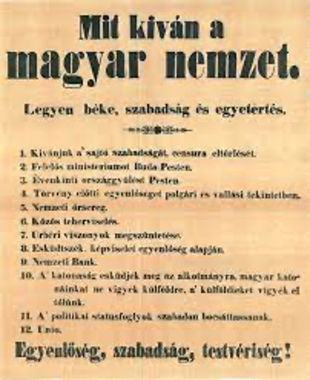 | 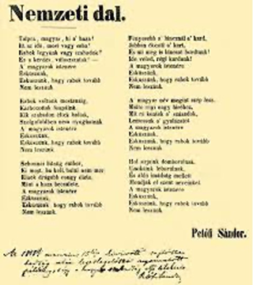 |